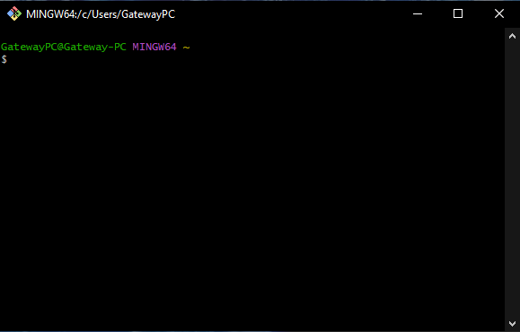

| Contenido | |
| Propósito del Software | Proceso de instalación |
| Video de instalación (Auxiliar) | Evidencia de instalación |
Git es un software de control de versiones diseñado por Linus Torvalds, pensando en la eficiencia, la confiabilidad y compatibilidad del mantenimiento de versiones de aplicaciones cuando estas tienen un gran número de archivos de código fuente. Git es un sistema de control de versiones distribuido gratuito y de código abierto diseñado para manejar todo, desde proyectos pequeños hasta proyectos muy grandes, con rapidez y eficiencia.
Para instalar Git, deberás:
En este video se explica el proceso de instalación de Git
Esta es mi evidencia de instalación
